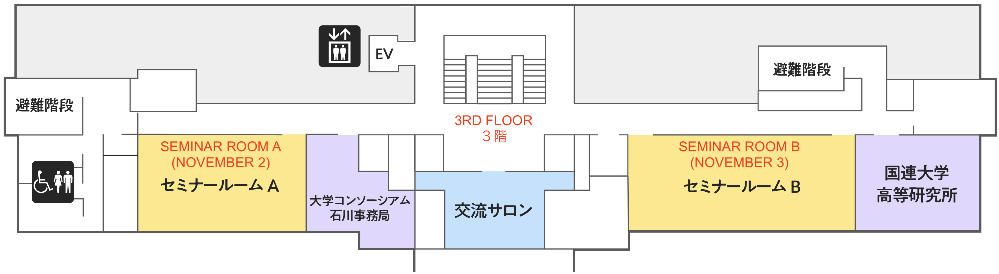
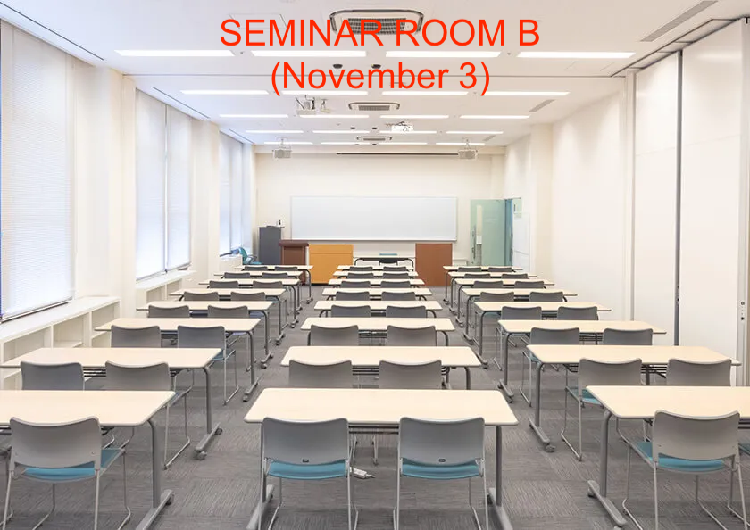
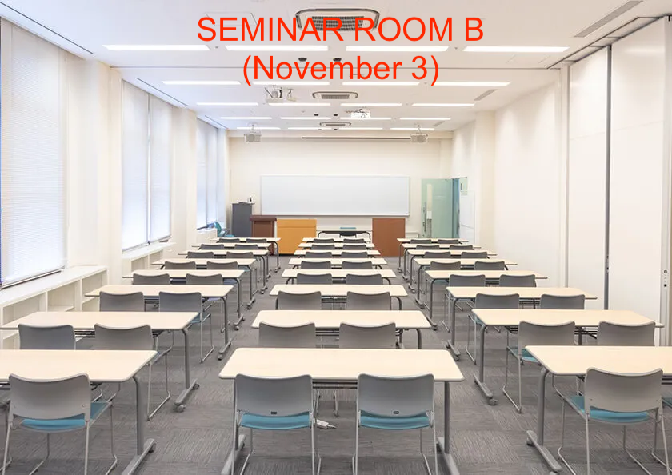

About
The CAS–KU Workshop 2025 brings together researchers from the Czech Academy of Sciences, Kanazawa University, and partner institutions for a two-day interdisciplinary meeting in Kanazawa, Japan. The workshop aims to introduce the main research projects led by members of these institutions and to explore potential collaborations and future research initiatives. The program includes long, medium, and short talks, as well as discussions, fostering the exchange of ideas and strengthening scientific ties across institutions.
Speakers
Titles ommited.
| Afifah Maya IKNANINGRUM | Kanazawa University, Japan |
| Yoshiyuki KAGEI | Insitute of Science Tokyo, Japan |
| Martin KALOUSEK | Czech Academy of Sciences |
| Yuki KARASAWA | Kanazawa University, Japan |
| Hideo KOZONO | Waseda University, Japan |
| Ondřej KREML | Czech Academy of Sciences |
| Václav MACHA | Czech Academy of Sciences |
| Patrick van MEURS | Kanazawa University, Japan |
| Sahat Pandapotan NAINGGOLAN | Kanazawa University, Japan |
| Yuma NAKAMURA | Kanazawa University, Japan |
| Šárka NEČASOVÁ | Czech Academy of Sciences |
| Hirofumi NOTSU | Kanazawa University, Japan |
| Ousamma OUNISSI | Kanazawa University, Japan |
| Norbert POŽÁR | Kanazawa University, Japan |
| Kharisma Surya PUTRI | Kanazawa University, Japan |
| Koya SAKAKIBARA | Kanazawa University, Japan |
| Taikei UECHI | Kanazawa University, Japan |
| Jan VALAŠEK | Czech Academy of Sciences |
Program
Day 1: November 2, 2025
| Time | Title of Talk / Speaker / Affiliation |
|---|---|
| 10:30 - 10:40 | Opening Remarks Masato Kimura, Kanazawa University |
| 10:40 - 11:30 | Weak solutions to a full compressible magnetohydrodynamic flow interacting with thermoelastic structure and singular limits Šárka Nečasová, Institute of Mathematics, Czech Academy of Sciences |
| 10:50 - 11:05 | Non-axisymmetric tornado-type flow: energy transfer and dynamics Afifah Maya Iknaningrum, Kanazawa University |
| 11:05 - 11:20 | Break |
| 11:20 - 11:35 | A variable time step Lagrange–Galerkin scheme with second-order accuracy in time for convection-diffusion problems Yuki Karasawa, Kanazawa University |
| 11:35 - 11:50 | Dynamics of the wave-pinning model for cell polarity Taikei Uechi, Kanazawa University |
| 11:50 - 12:20 | A rate-independent model of droplet evolution Norbert Pozar, Kanazawa University |
| 12:20 - 14:00 | Lunch Break |
| 14:00 - 14:30 | 3 topics on many-particle limits Patrick van Meurs, Kanazawa University |
| 14:30 - 15:20 | Analysis of bi-fluid systems Martin Kalousek, Institute of Mathematics, Czech Academy of Sciences |
| 15:20 - 15:35 | Break |
| 15:35 - 15:50 | On the memory of the twin vortex computer for an optimized cylinder Yuma Nakamura, Kanazawa University |
| 15:50 - 16:40 | On compressible fluids with shear dependent viscosity Václav Mácha, Institute of Mathematics, Czech Academy of Sciences |
| 16:40 - 16:55 | Break |
| 16:55 - 17:45 | On dissipative turbulent solutions to the compressible anisotropic Navier–Stokes equations in unbounded domains Ondřej Kreml, Institute of Mathematics, Czech Academy of Sciences |
Day 2: November 3, 2025
| Time | Title of Talk / Speaker / Affiliation |
|---|---|
| 09:30 - 10:20 | Equilibrium state of the 3D MHD equations with an arbitrary geometry Hideo Kozono, Waseda University & Tohoku University |
| 10:20 - 10:35 | Parameter identification in elliptic PDEs using the coupled complex boundary method with Tikhonov regularization Sahat Pandapotan Nainggolan, Kanazawa University |
| 10:35 - 10:50 | Fracture phase field model with unilateral contact condition: energy dissipation identity and finite element simulations Oussama Ounissi, Kanazawa University |
| 10:50 - 11:05 | Break |
| 11:05 - 11:20 | Lagrangian–Galerkin moving mesh method Kharisma Surya Putri, Kanazawa University |
| 11:20 - 12:10 | Numerical modelling of human phonation process Jan Valášek, Institute of Mathematics, Czech Academy of Sciences |
| 12:10 - 14:00 | Lunch Break |
| 14:00 - 14:30 | Well-posedness of the Langmuir film model Koya Sakakibara, Kanazawa University |
| 14:30 - 15:20 | Stability of bifurcating patterns in viscous compressible fluids Yoshiyuki Kagei, Institute of Science Tokyo |
| 15:20 - 15:35 | Break |
| 15:35 - 16:25 | Spatially adaptive stabilized Lagrange—Galerkin schemes for two-fluid flow and fluid-structure interaction problems Hirofumi Notsu, Kanazawa University |
| 16:25 - 16:30 | Closing Remarks Hirofumi Notsu, Kanazawa University |
| 16:30 - 18:00 | Project / Free Discussion |
Venue
Place:
Seminar Room A (November 2) and Seminar Room B (November 3)
3F, Shiinoki Cultural Complex, Kanazawa City, Ishikawa Prefecture, Japan
Address:
2-chōme-1-1 Hirosaka, Kanazawa City, Ishikawa Prefecture 920-0962


 

Organizers
| Masato KIMURA | Kanazawa University, Japan |
| Hirofumi NOTSU | Kanazawa University, Japan |
| Ousamma OUNISSI | Kanazawa University, Japan |
| Kharisma Surya PUTRI | Kanazawa University, Japan |
| Julius Fergy RABAGO | Kanazawa University, Japan |
| Koya SAKAKIBARA | Kanazawa University, Japan |
Contact
If you have any questions or requests, send an e-mail to rabagojft[at]se.kanazawa-u.ac.jp.